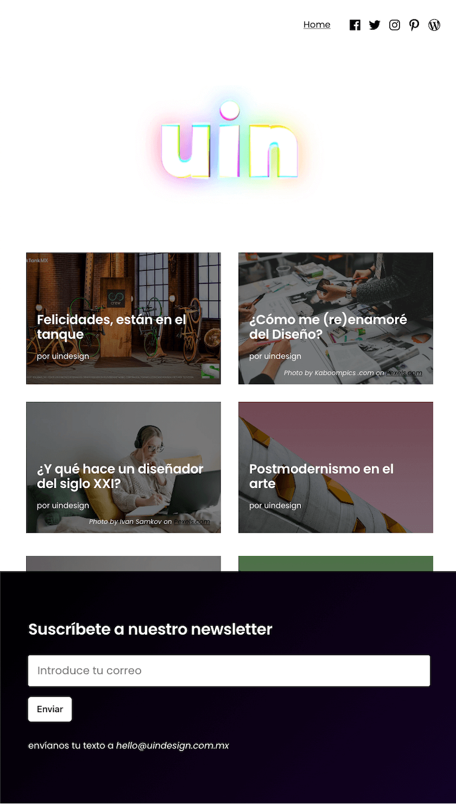

Da click aquí para contactarme

Da click aquí para contactarme
UIN nació como proyecto conjunto entre estudiantes de posgrado de la Escuela de Diseño del INBAL, como espacio de creación y diálogo con otros estudiantes de la misma área del conocimiento. El proyecto tuvo como participantes a estudiantes de licenciatura y posgrado de la misma institución, así como a participantes de instituciones internacionales como la Universidad de Santiago de Chile.
En este proyecto me encargué del Branding y el Diseño web.
El diseño fue realizado a partir de una experimentación de los elementos visuales disponibles y de la propuesta del equipo a cargo. Esto quiere decir que por un lado se buscó hacer énfasis en los conceptos de creatividad y difusión del diseño desde un punto de vista académico. De igual manera, se tomaron en cuenta las tendencias para generar una aceptación por parte de los estudiantes.

El sitio web funcionaba como blog, donde los participantes podían compartir los ensayos, críticas y reflexiones que han creado a lo largo de su educación universitaria.
